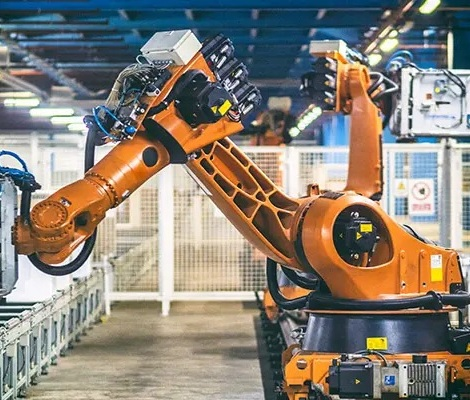

Principal
Os robôs são máquinas automatizadas criadas para auxiliar ou substituir os humanos na realização de tarefas. Eles estão presentes em diversos setores, como indústrias, hospitais, residências e até na exploração espacial. Podem assumir várias formas, como braços mecânicos, veículos autônomos ou até robôs humanoides. Entre os principais tipos estão os robôs industriais, usados em fábricas; os robôs colaborativos (cobots), que trabalham junto com pessoas; e os robôs móveis, que se locomovem sozinhos. Equipados com sensores e sistemas de controle, esses robôs executam tarefas com precisão, segurança e eficiência.

Adaptado de: Ark Systems
Adaptado de: Ark Systems